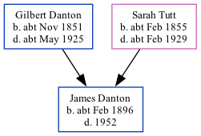

James Edmund Danton cFeb 1896 - 1952
[ Home ] | [ Calendar ] | [ Surnames Index ] | [ Family History ]A glas's worker and the child of Gilbert Danton (a gas stoker) and Sarah Tutt, James Danton, the first cousin twice-removed on the father's side of <a href="I1.html">Nigel Horne</a>, was born in Stratford, London, England <i>c.</i> Feb 1896<span class="citation">1,2,3,4</span>.</p><p>Throughout his life, James lived in several places: in West Ham, Essex, England in 1901<span class="citation">1</span>; on Abbey Lane, West Ham, London, England on Mar 31, 1901<span class="citation">5</span>; and at 83 Abbey Lane in West Ham on Apr 2, 1911<span class="citation">6</span>. <p>He died in 1952.
Parents
- Gilbert Johnson was born c. Nov 1851
- Sarah Maria was born c. Feb 1855
Citations
- 1901 England Census Online publication - Provo, UT, USA: The Generations Network, Inc., 2005.Original data - Census Returns of England and Wales, 1901. Kew, Surrey, England: The National Archives of the UK (TNA): Public Record Office (PRO), 1901. Data imaged from the National (Relation to Head of House: Son)
- 1911 England Census Online publication - Provo, UT, USA: Ancestry.com Operations, Inc., 2011.Original data - Census Returns of England and Wales, 1911. Kew, Surrey, England: The National Archives of the UK (TNA), 1911. Data imaged from the National Archives, London, England.
- England & Wales births 1837-2006 - Findmypast
- England & Wales, FreeBMD Birth Index, 1837-1915 Online publication - Provo, UT, USA: The Generations Network, Inc., 2006.Original data - General Register Office. England and Wales Civil Registration Indexes. London, England: General Register Office. © Crown copyright. Published by permission of the Cont
- 1901 England, Wales & Scotland Census - Findmypast (was age 5 and the son of the head of the household)
- 1911 Census for England & Wales - Findmypast (was age 15 and the son of the head of the household)
Media
England & Wales births 1837-2006 - BMD/B/1896/1/AZ/000141/192
1901 England, Wales & Scotland Census - GBC/1901/0010861319
Family Tree
Generated by Ged2Site. Last updated on Jul 20, 2025